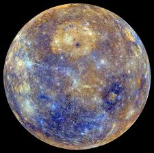
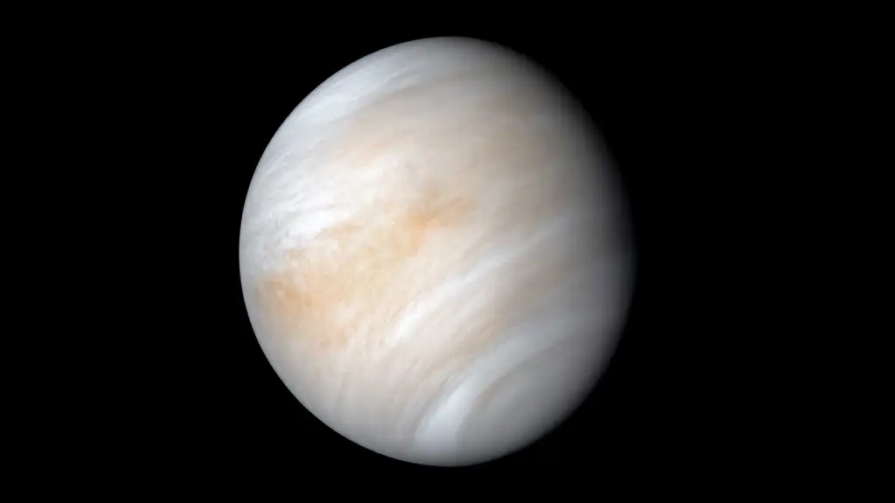
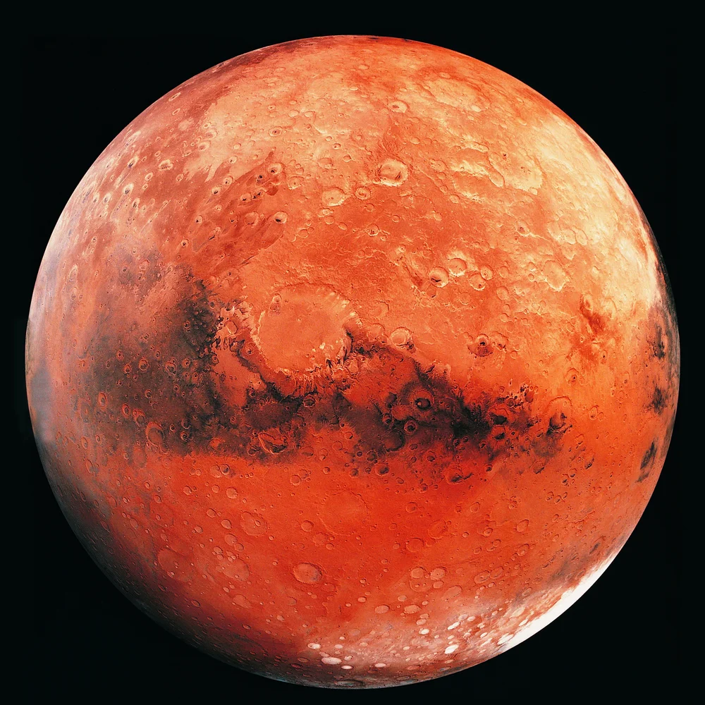
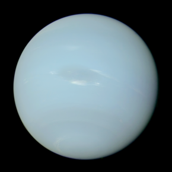

Mercury
• Closest planet to the Sun.
• The smallest planet in the
solar system.
• It has a thin atmosphere,
resulting in extreme temperature
differences between day and night.

Venus
• Second closest planet to the Sun.
• Known as Earth’s twin because of
its similar size.
• It has a dense atmosphere that
traps heat, making it the
hottest planet in the solar system.

Earth
• The only planet known to support
life.
• It has a moderate atmosphere and
oceans that cover about 70% of
its surface.
• It has one moon.

Mars
• Called the Red Planet due to the
iron oxide on its surface.
• Features massive mountains and
valleys, including Olympus Mons,
the tallest mountain in the solar
system.
• Believed to have had water in the
past.

Jupiter
• The largest planet in the solar
system.
• Known for its “Great Red Spot,”
a massive storm that has lasted
for centuries.
• It has over 79 moons, including
Io and Europa.

Saturn
• Famous for its beautiful rings
made of ice and dust.
• The second-largest planet in
the solar system.
• It has many moons, including
Titan, which is thought to have
methane lakes.

Uranus
• Has an extreme tilt, making it
appear to roll on its side as it
orbits the Sun.
• Its atmosphere contains methane,
giving it a bluish-green color.

Neptune
• The farthest planet from the Sun.
• Known for its deep blue color
due to methane in its atmosphere.
• It has the strongest winds in the
solar system.